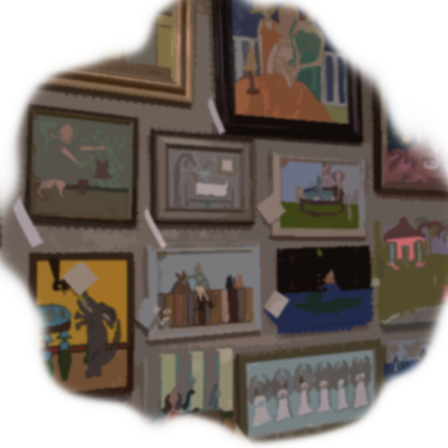

그래서 당신은 남았다.
"모르겠어.. 나도 무섭단말이야.." 당신은 굉장히 주저하면서 이야기했다.
"나처럼 끝날까봐? 걱정마요. 나는 당신을 떠나게 시키지는 않을거에요. 하지만, 밖에 나갔을 때만은 굉장히 좋았다는 것을 알아주세요." 향수가 섞인 감정들이 그녀의 얼굴을 스쳐지나갔다. "여기서 떠날때, 그냥 무작정 앞만보고 달렸어요, 누군가가 나를 구해달라고 기도하면서."
"잡히기전에 몇개의 공장을 지났고 분명하게 초콜렛 냄새를 맡았어요. 엄청 강하고 달콤했어요." 그녀는 다시 몇 초의 침묵속으로 사라졌다. "그리고 그림들이요, 컬러풀한 그림들. 그게 저를 집을 떠오르게 했어요. 사실 저희 아빠가 아티스트였거든요, 그래서 그는 항상 삼각지로 오고싶다고 이야기하곤 했었어요."
당신은 그녀가 말한 것들에 대해 우리가 어디에 있는지 추측할 수 있을것이다. "왜 일로 온거야?"
"박수근때문에요. 그의 작품은 굉장히 독창적이라, 이전 그림들에서는 그런 질감들을 보지 못했었어요. 그리고 그는 군인들의 초상화를 그리기 위해서 여기로 왔고 유명한 그림 몇 장을 그렸어요. 우리 아빠는 굉장히 초현실적인 초상화를 그렸어요, 마치 그들이 움직이는 순간으로부터 온것처럼요. 하지만, 그건 박수근씨가 그린거에 대해서 너무 모조폼처럼 느껴졌어요. 아빠가 아직도 그림을 그리시는지 궁금하네요.." 그녀의 눈은 공허와 슬픔으로 가득찼다.
대화를 어디로 이끌 것인가?